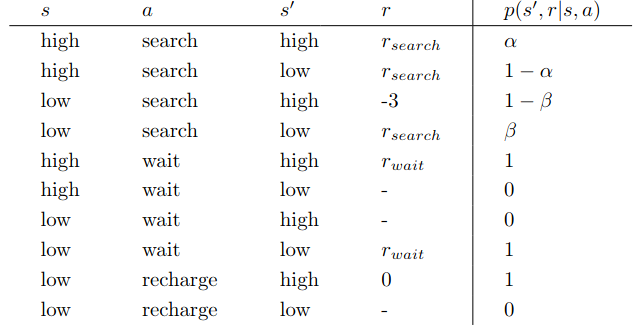

《强化学习》(第 2 版) 习题 3
3.1
1.确定游戏
闯关小游戏 (类似森林冰火人那种) , 游戏是确定的, 即你每次都可以用同样的方式获得同种分数
动作为上下左右, 可以考虑用相同时间间隔来进行离散处理, 通关给出正收益, 被攻击, 死亡给出负收益.
2.对弈
棋类游戏, 给定对手, 那么对手的行为的概率就是可预测的, 那么环境 (棋盘) 就可预测.
3.随机游戏
比如 2048.
2
不能. 环境信息决定于智能体的感知能力, 如果感知能力不够强 (不是上帝视角) , 那么同样的环境信息就可能是不同的情况, 那么这样的任务就不是 $\text{MDP}$ 框架.
3
个人觉得是第一个层次 (即方向盘) . 首先要考虑 “动作” 操控 (实际操作) 的难度. 比如说轮胎、肌肉、思想这种层面, 即使训练好了, 如何方便之前的做出这种动作仍是一种困难. 而且要控制动作的数量. 肌肉要控制的地方太多了, 会导致训练的参数很多, 收敛慢. 而且还要便于人类理解. 人类就是操控方向盘来与环境交互的, 以方向盘层次作为训练的动作更容易理解.
4

这是我在[别的地方](https://raw.githubusercontent.com/LyWangPX/Reinforcement-Learning-2nd-Edition-by-Sutton-Exercise-Solutions/master/Chapter 3/Solutions_to_Reinforcement_Learning_by_Sutton_Chapter_3_rx1.pdf)找到的答案. 但我认为这样的答案是错误的 (或者是题目没有出得足够严谨) .
要知道 $r_{\text{search}},r_{\text{wait}}$ 在文中的定义是 “期望数量 (期望收益)” , 重点关注 “期望” , “期望” 并不能作为 $p(s’,r\mid s,a)$ 中的 $r$ , 因为取得期望的概率在绝大多数的情况下不是 $1$ , 甚至是 $0$ . 这里的 $r$ 应该取 $0,1,2,3\cdots$ , 并且给出 $r$ 取 $0,1,2,3\cdots$ 的条件概率才能够做这道题. 但题目也不可能这么出, 因此我猜测出题人要的答案应该就是如此, 但是他出的这道题目并不对应这个答案 (出题不严谨) .
5
$$
\sum_{s’\in \mathcal S}\sum_{r\in\mathcal R}p(s’,r\mid s,a)=1, 对于所有s\in(\mathcal S\backslash 终结状态),a\in\mathcal A(s).
$$
6
每次的回报都是 $-\gamma^K$ , $K$ 是每一幕失败前的步数. 区别在于持续性任务将所有失败的事件都考虑了 (失败会大于等于一次) .
7
可能没有采用折扣, 导致机器人认为只要走出迷宫即可, 不需要考虑时间的长短.
8
$$
G_5=0, G_4=2, G_3=4,G_2=8, G_1=6,G_0=4
$$
9
$$
G_1=7\sum_{i=1}^\infty 0.9^{i-1}=70, G_0=2+0.9\cdot70=65
$$
10
中学等比数列+一丢丢极限(不严谨甚至可以直接忽略极限).
11
$$
\sum_{a}\pi(a|s=S_t)\sum_{s’,r}p(s’,r\mid s=S_t,a)r
$$
12
$$
v_{\pi}(s)=\sum_{a}\pi(a\mid s)q_{\pi}(s,a)
$$
13
$$
q_\pi(s,a)=\sum_{s’,r}p(s’,r\mid s,a)(r+\gamma v_{\pi}(s’))
$$
14
$$
(2.3+0.4-0.4+0.7)/4\approx0.7
$$
15
应该是相对大小.
$$
v_c=\frac{c}{1-\gamma}
$$
16
会, 因为 $v_c$ 对每个状态来说都不一样了 (距离终结状态的距离不同) . 举例懒得举.
17
$$
q_{\pi}(s,a)=\sum_{s’,r}p(s’,r\mid s,a)[r+\gamma \sum_{a’}q_\pi(s’,a’)\pi(a’\mid s’)]
$$
18
$$
v_\pi(s)=\mathbb{E}{a\sim\pi(a\mid s)}[q_\pi(s,a)]=\sum_{a}\pi(a\mid s)q{\pi}(s,a)
$$
19
$$
q_\pi(s,a)=\mathbb{E}{s’,r\sim p(s’,r\mid s,a)}[r+v_\pi(s’)]=\sum _{s’, r}p(s’,r\mid s,a)(r+\gamma v{\pi}(s’))
$$
20
绿色部分是 $-1$ , 洞口是 $0$ , 然后按照木杆的距离递减.
21
绿色部分是 $-1$ , 然后按照推杆的距离画一个 $-2$ 等值线, 然后以木杆的距离递减.
22
$$
\gamma=0:\pi_{\text{left}},\gamma=0.9:\pi_{\text{right}},\gamma=0.5:\pi_{\text{both}}
$$
23
懒得写, 式 (3.20) 套进去就好.
24
$$
G=\sum_{i=0}^\infty 10\gamma^{5i},24.419
$$
25
$$
v_*(s)=\max_aq_*(s,a)
$$
26
$$
q_*(s,a)=\sum_{s’,r} p(s’,r\mid s,a)[r+\gamma v_*(s’)]
$$
27
$$
\pi_*(a\mid s)=\max_aq_*(s, a)
$$
28
$$
\pi_*(a\mid s)=\max_a\sum_{s’,r} p(s’,r\mid s,a)[r+\gamma v_*(s’)]
$$
29
$$
\begin{aligned}
v_\pi(s)&=\sum_{s’,a}p(s’\mid s,a)[r(s,a)+\gamma v_\pi(s’)]\
q_\pi(s,a)&=r(s,a)+\gamma\sum_{s’} p(s’\mid s,a)\sum_{a’}\pi(a’\mid s’)q_\pi(s’,a’)
\end{aligned}
$$
最优价值函数同理.